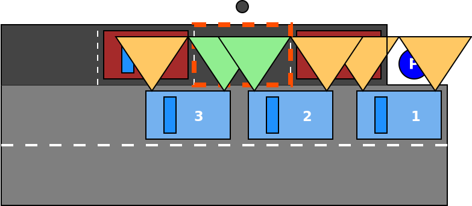
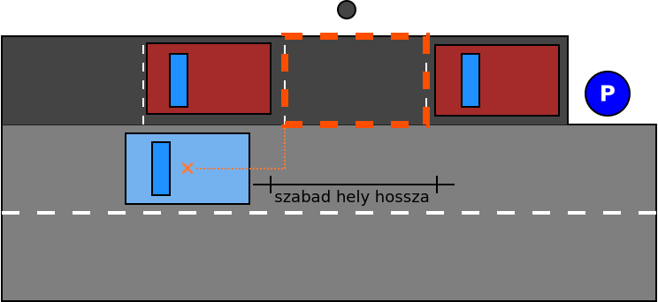
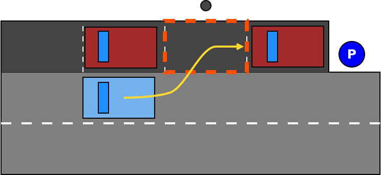
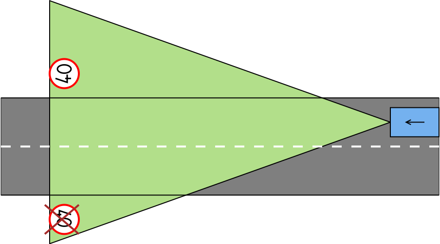

Vezetéstámogató funkciók
Adaptív tempomat (Adaptive Cruise Control - ACC)
Az adaptív sebességtartó automatika a hagyományos tempomat továbbfejlesztett változata. Az ACC egy rendkívül precíz radarral, valamint a gázadás és a fékezés elektronikus vezérlésével tartja az előre beállított követési távolságot. Ha a két jármű között csökken a távolság, az ACC mérsékli a sebességet, sőt szükség esetén fékez is, közben pedig aktiválja a féklámpákat. Ha az elöl haladó jármű gyorsít, vagy átsorol a másik sávba, az Ön autója is fokozatosan felgyorsít, amíg el nem éri az előre beállított sebességet. Az adaptív sebességtartó automatikával a kívánt követési távolságot is beállíthatja (hosszú, közepes vagy rövid).
Bemutatóvideó (YouTube)

Implementálás
A kiválasztott célobjektum (autó előtt haladó NPC) sebességéhez igazítja a saját sebességet, vagy tartja a sofőr által kiválasztott sebességhatárt, ha nincs előtte célobjektum.
- ki- és bekapcsolható, reagál az állapotváltás, alapértelmezetten az aktuális sebesség, de min célsebesség 30 km/h
- ha nincs saját sávban autó, a játékos autó tartja a kiválasztott célsebességet
- ha saját sávban található autó:
- felveszi a sebességét, ha lassabb
- tartja a kiválasztott sebességet, ha gyorsabb
- fékezésre kikapcsol
- AEB beavatkozásra kikapcsol
- ha speed limitet talál a buszon (táblafelismerő), azt alkalmazza új célsebességként, amíg a sofőr felül nem írja

Kezelőszervek
- bekapcsoló gomb
- célsebesség kijelölése
- léptetés 10 km/h-val
- 30 és 160 km/h között
- követési távolság definiálása másodpercben: 0.8, 1.0, 1.2, 1.4
- sebességfüggő
- a léptetés körbe jár, tehát 1.4 után 0.8 következik és a 0.8 után az 1.4
Autonóm vészfékező rendszer (Automatic Emergency Brake - AEB)
Az Autonóm Vészfékező Rendszer (AEB) lényege, hogy egy beépített technológia alkalmazásával (általában radar, kamera, vagy lézer segítségével) folyamatosan méri az elöl haladó jármű mögötti távolságot. Ha a rendszer úgy érzi, hogy a gépkocsik közötti távolság veszélyesen csökken, akkor jelzést ad a járművezetőnek, lehetőséget adva a beavatkozásra (pl. fékezésre). Amennyiben a járművezető reakciója elmarad, vagy annak mértékét a rendszer nem tartja elégségesnek, abban az esetben az AEB beavatkozik, s akár vészfékezés alkalmazásával igyekszik a balesetet elkerülni.
forrás: baleset-megelozes.eu / Autonóm Vészfékező Rendszer (AEB)
Bemutatóvideó (YouTube)

Implementálás
Nyilvánvalóan nem azt kell vizsgálni, hogy az autó ütközik-e az előtte levő objektummal hanem, hogy ütközni fog-e vele. A vészfékezés maximális lassulása 9 m/s^2 lehet. Ha az autó 36 m/s sebességgel halad akkor 4 másodperc kell a nullára fékezéshez (ha 50 km/h sebességgel halad, akkor 20). Az aktuális sebességből meghatározható, hogy mekkora a fékút, a maximális megengedett lassulás mellett. Az is kiszámolható, hogy ez mennyi időt vesz igénybe, így az is, hogy mikor kell elkezdeni a vészfékezést, hogy a gyalogost ne üssük el.
A radar szenzor elég messzire ellát, egy nem mozgó objektum (pl. fa) esetében egyszerű meghatározni, hogy lesz-e ütközés és el kell-e kezdeni vészfékezni. Mozgó objektum (gyalogos) esetében azt is figyelembe kell venni, hogy mire odaérünk még az úton lesz-e.
- elkerülhető ütközés esetén vizuális figyelmeztetés a sofőrnek
- 70 km/h felett figyelmeztetés, hogy az AEB nem tud minden helyzetet kezelni
- ha a sofőr nem avatkozik közbe, automatikus fékezés (az utolsó pillanatban, ahol az ütközés még elkerülhető)
- az automatikus fékezés mértéke a sebességgel arányos, de nem lehet 9 m/s^2-nél nagyobb
- gyalogos, fa esetén megáll az autó
- nincs nem releváns objektumokra való fékezés (fals pozitív) - pl. szembejövő autó

Parkoló asszisztens (Parking Pilot - PP)
A rendszert az erre szolgáló vezérlővel aktiválni kell, majd az irányjelzővel kijelölni, hogy jobbra, vagy balra keressük a parkolóhelyet. Ezután ahogy az autó vezetői irányítás mellett végiggurul a parkoló mellett, a rendszer detektálja az üres parkolóhelyet. Ekkor hátramenetbe kapcsolva az PP vezetői beavatkozás nélkül beáll a szabad pozícióba.
Bemutatóvideók (YouTube)


Implementálás
- a parkolás megkezdése külön inputhoz kötött
- a kormány és gáz/fék vezérlésével beparkolás a talált helyre
- a tolatási manőver lehet egy előre definiált szekvencia, amelyet a parkolóhely (abszolút) pozíciójával lehet paraméterezni
- ha a PP aktív és a váltó hátramenetben van (és van detektált parkolóhely), akkor parkolási szekvencia végrehajtása
- a párhuzamos parkolás akkor sikeres, ha ütközés nélkül megtörténik
- a sofőr beavatkozására (fék, gáz, kormány) kikapcsolás (megszűnik az automata vezérlés)
- parkolóhely keresése
- 
- Az üres hely detektálása lényegébe egy állapotátmenet az első és a hátsó ultrahang szenzor „van-e akadály” visszajelzésében. Amíg egy kocsisor mellett halad az autó mindkét szenzor „van akadály” jelzéssel tér vissza (ez valójában nem
booleanállapot, egy objektum listát ad vissza), az üres hely kezdetén a az első „nincs akadály” állapotba megy át (a lista üres), majd ahogy az autó halad tovább a hátsó szenzor is „nincs akadály” állapotba kerül. - A szabad terület végén ugyanez fordítva játszódik le.
- Azonban a parkoló autó objektumot adja vissza a szenzor,a melynek ismert a kiterjedése és a referencia pontja, így a játékszoftverben pontosan „látszik” a foglalt terület. Ahogy az egocar elhalad a parkoló autók mellett mindkét autó által lefoglalt terület pontosan ismert így kiszámítható a közöttük meglevő szabad terület.
- Parkolóhely azonosítva
- 
- Miután sikerült meghatározni a szabad parkolóhely méretét, ezt valamiylen formában le kell írni. Célszerűen az egocar referenciapontjáthoz viszonyítva, hogy milyen távol vagyunk tőle, valamint a méretét/hosszát. Lehet egy téglalappal is reprezentálni ahogy az ábrán is látszik.
- Automatikus parkolás
- 
- A parkolási manőver tökéletes megoldása, hogy a Parking Pilot az autó kezelőszerveire hat. Eltekeri a kormányt, gázt ad, fékez, nem csak úgy módosítgatja az autó koordinátáit és elforgatását. (Mindez precízen szabályozható hajtáslánc és kormánymechanika implementációt igényel.)
Parkolás manőver leírása nagy vonalakban forrás:
- Bring your car to a stop alongside the car at the front of the space.
- Reverse into the space with an S motion.
- Once the car is parallel with the curb, pull forward to center your car within the space.


Kezelőszervek
- aktiválás billentyűzettel
- az irányjelzővel jelölhető ki keresési oldal
Sávtartó automatika (Lane Keeping Assistant - LKA)
Bemutatóvideó (YouTube)

Implementálás
Két jellemző megvalósítása van. Az egyik a sáv széleihez viszonyítva korrigál: ha az autó elérné a sáv szélét, akkor ellenkormányoz. A másik megoldás kiszámolja a sáv közepét és azon tartja az autót.
- 45 foknál enyhébb kanyarodású úton a kocsi a sáv szemmel látható közepén marad
- ha el kell engednie a kontrollt (az automatika számára kezelhetetlen forgalmi szituáció következik, pl. éles kanyar, kereszteződés), vizuális figyelmeztetést ad Ha újra elérhető a funkció (pl. elhagytuk a kanyart) vizuális indikáció (a műszerfalon) Be- és kikapcsolható
1. Sáv széleinek használata

2. Sávközép használata

Sávon belüli mozgás: a LKA működése egy enyhe sávon belüli cikázást eredményez.

Kezelőszervek
- aktiválás a műszerfalról (vagy billentyűzettel)
Táblafelismerő (Traffic Sign Recognition - TSR)
A kamera látóterébe eső és az autó számára releváns (ellentétes irányba közlekedők számára szólóakat nem) közlekedési táblákat fel kell ismerni és a legutolsó relevánsat megjeleníteni a műszerfalon. Ha ez sebességkorlátozás, akkor azt a buszra kiírni (az ACC használja).
Bemutatóvideó (YouTube)

Implementálás
- a táblát addig kell megjeleníteni, amíg újabb nem talál a rendszer
- a sebesség limit mindaddig érvényes, míg feloldásra vagy felülbírálásra nem kerül
- nem releváns táblák nem kerülhetnek azonosításra
- mindenek előtt az út bal oldalán levők
- a kamera látótere elég nagy, a kanyaroknál kialakuló helyzetet is kezelni kell

Tolatóradar
A hátsó ultrahang szenzorokat használja akadály detektálásra. Kiszámolja az akadály távolságát és annak megfelelően figyelmeztető jelzést ad a vezetőnek, megkönnyítve a manuális parkolást, tolatást.
Bemutatóvideó (YouTube)

Implementálás
- csak hátramenetben aktív
- figyelmeztetés megjelenítése a műszerfalon
- távolság megjelenítése a műszerfalon
- a buszon keresztül történik a modulok (tolatóradar és műszerfal) kommunikáció
- a kijelzés 3 fokozatban történik
- nincs akadály
- közel van akadály (0.8m-en belül)
- nagyon közel van akadály (0.4m-en belül)